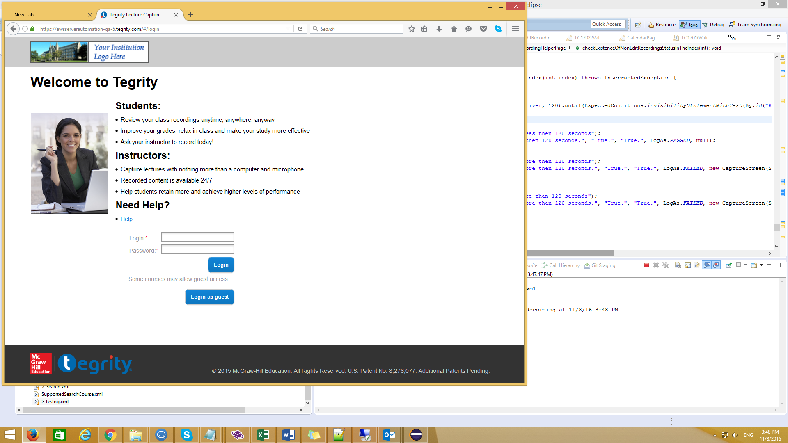
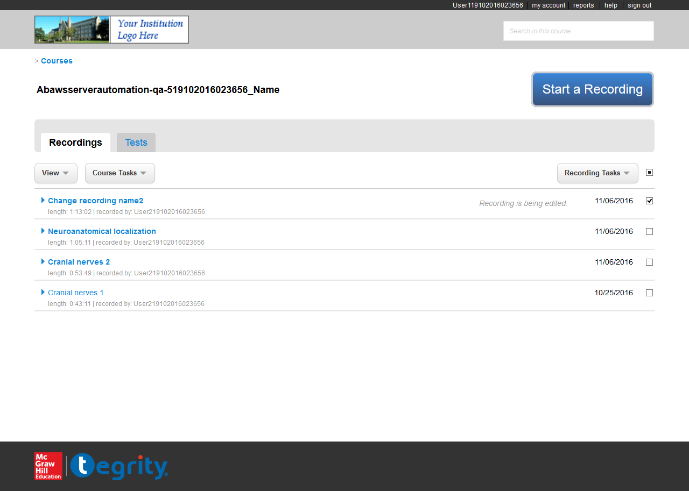

Reflections of Visionary Minds
The following table lists down the Sequential Steps during the Run
TestCase Name: test17022 : Iteration 1
Time Taken for Executing: 298 Sec
Current Run Number: Run 66 Method Type: Test Method
TestCase Name: test17022 : Iteration 1
Time Taken for Executing: 298 Sec
Current Run Number: Run 66 Method Type: Test Method
Requirement Coverage/ TestCase Description
Requirement Coverage/Build Info/Cycle - Description
Execution Platform Details
| O.S | : | Windows 8.1, amd64Bit, v6.3 |
| Java | : | 1.8.0_65 |
| Hostname | : | QA-2-Win8_1-64 |
| Selenium | : | 2.53.1 |
Summary
| Status | : | Failed |
| Execution Date | : | 08-Nov-2016 03:53:02 |
| Browser | : | firefox,v47.0.1 |
Author Info
| Author Name | : | Unknown |
| Creation Date | : | Unknown |
| Version | : | Unknown |
| System User | : | MoshikK |
| S.No | Step Description | Input Value | Expected Value | Actual Value | Time | Line No | Status | Screen shot |
|---|---|---|---|---|---|---|---|---|
| 1 | load page succeeded | https://awsserverautomation-qa-5.tegrity.com | 5 Sec | 414 |  |
 | ||
| 2 | Clicked on Login element | Clicked succeeded. | Clicked succeeded.. | 4 Sec | 83 | |
||
| 3 | Tegrity courses home page is visible | User119102016023656 | Course List page is displayed | Course List page is displayed | 2 Sec | 139 | |
|
| 4 | successflly select the course. | 5 Sec | 275 | |
||||
| 5 | select the course: Abawsserverautomation-qa-519102016023656_Name | 4 Sec | 442 | |
||||
| 6 | Checkbox all is selected | 1 Sec | 1773 | |
||||
| 7 | Checkbox. | Success to select. | Sucess to select. | 1 Sec | 3797 | |
||
| 8 | Select Recording Tasks -> EditRecordingProperties menu items | EditRecordingProperties window is displayed | EditRecordingProperties window is displayed | 2 Sec | 1988 | |
||
| 9 | Recording name changed. | Change to: Change recording name | Changed to [[FirefoxDriver: firefox on WINDOWS (79b33d1f-82c2-4c9e-bd0b-183396e703c3)] -> id: recordingTItle]Change recording name | 3 Sec | 485 | |
||
| 10 | Clicked on save button. | Success. | Success. | 243 Milli Sec | 510 | |
||
| 11 | The Edit Recording Properites window was close at time. | Success. | Success. | 27 Sec | 851 | |
||
| 12 | Confirm window. | Closed. | Closed. | 0 Milli Sec | 871 | |
||
| 13 | Confirm menu background color is same as recording background color. | 2 Sec | 691 | |
||||
| 14 | The location of the ok button is on the right bottom. | 48 Milli Sec | 709 | |
||||
| 15 | Clicked on OK button. | 190 Milli Sec | 390 | |
||||
| 16 | Confirm window. | Closed. | Closed. | 3 Sec | 449 | |
||
| 17 | Recording list. | Target recording exist. | Target recording exist. | 382 Milli Sec | 2663 | |
||
| 18 | Waiting for element visibility | Element is visibile before timout | Element is not visible after timeout | 71 Sec | 236 |  |
||
| 19 | Select additional_content_tab -> AdditionalContentTab | AdditionalContentTab was click | AdditionalContentTab was clicked | 1 Sec | 1575 | |
||
| 20 | The tab content failed to load: Timed out after 8 seconds waiting for condition to not be valid: text to be "View Course Tasks Recording Tasks Change recording name length: 1:13:02 | recorded by: User219102016023656 11/06/2016 Neuroanatomical localization length: 1:05:11 | recorded by: User219102016023656 11/06/2016 Cranial nerves 2 length: 0:53:49 | recorded by: User219102016023656 11/06/2016 Cranial nerves 1 length: 0:43:11 | recorded by: User219102016023656 10/25/2016". Current text: "View Course Tasks Recording Tasks Change recording name length: 1:13:02 | recorded by: User219102016023656 11/06/2016 Neuroanatomical localization length: 1:05:11 | recorded by: User219102016023656 11/06/2016 Cranial nerves 2 length: 0:53:49 | recorded by: User219102016023656 11/06/2016 Cranial nerves 1 length: 0:43:11 | recorded by: User219102016023656 10/25/2016" Build info: version: '2.53.1', revision: 'a36b8b1cd5757287168e54b817830adce9b0158d', time: '2016-06-30 19:26:09' System info: host: 'QA-2-Win8_1-64', ip: '192.168.0.235', os.name: 'Windows 8.1', os.arch: 'amd64', os.version: '6.3', java.version: '1.8.0_65' Driver info: org.openqa.selenium.firefox.FirefoxDriver Capabilities [{applicationCacheEnabled=true, rotatable=false, handlesAlerts=true, databaseEnabled=true, version=47.0.1, platform=WINDOWS, nativeEvents=false, acceptSslCerts=true, webStorageEnabled=true, locationContextEnabled=true, browserName=firefox, takesScreenshot=true, javascriptEnabled=true, cssSelectorsEnabled=true}] Session ID: 79b33d1f-82c2-4c9e-bd0b-183396e703c3 | 13 Sec | 1303 | |
||||
| 21 | Clicked on recordings tab | 0 Milli Sec | 2506 | |
||||
| 22 | The status has change in less then 120 seconds. | True. | True. | 5 Sec | 4686 | |
||
| 23 | Checkbox all is selected | 6 Sec | 1773 | |
||||
| 24 | Checkbox. | Success to select. | Sucess to select. | 1 Sec | 3797 | |
||
| 25 | Select Recording Tasks -> EditRecordingProperties menu items | EditRecordingProperties window is displayed | EditRecordingProperties window is displayed | 1 Sec | 1988 | |
||
| 26 | Recording name changed. | Change to: Change recording name2 | Changed to [[FirefoxDriver: firefox on WINDOWS (79b33d1f-82c2-4c9e-bd0b-183396e703c3)] -> id: recordingTItle]Change recording name2 | 3 Sec | 485 | |
||
| 27 | Clicked on save button. | Success. | Success. | 162 Milli Sec | 510 | |
||
| 28 | The Edit Recording Properites window was close at time. | Success. | Success. | 4 Sec | 851 | |
||
| 29 | Confirm window. | Closed. | Closed. | 0 Milli Sec | 871 | |
||
| 30 | Confirm menu background color is same as recording background color. | 2 Sec | 691 | |
||||
| 31 | The location of the ok button is on the right bottom. | 48 Milli Sec | 709 | |
||||
| 32 | Clicked on OK button. | 181 Milli Sec | 390 | |
||||
| 33 | Confirm window. | Closed. | Closed. | 3 Sec | 449 | |
||
| 34 | Recording list. | Target recording exist. | Target recording exist. | 391 Milli Sec | 2663 | |
||
| 35 | The status has not change in more then 120 seconds. | True. | True. | 120 Sec | 4695 |  |
 |
{kind=link}
{kind=link}
{kind=link}
{kind=link}
Reason for Failure: expected [true] but found [false]
Click Me to Show/Hide the Full Stack Trace
java.lang.AssertionError: expected [true] but found [false]
at org.testng.Assert.fail(Assert.java:94)
at org.testng.Assert.failNotEquals(Assert.java:513)
at org.testng.Assert.assertTrue(Assert.java:42)
at org.testng.Assert.assertTrue(Assert.java:52)
at com.automation.main.page_helpers.RecordingHelperPage.checkExistenceOfNonEditRecordingsStatusInTheIndex(RecordingHelperPage.java:4696)
at com.automation.main.edit_recording_properties.TC17022ValidateMultipleChangesInARowOnTheSameRecording.test17022(TC17022ValidateMultipleChangesInARowOnTheSameRecording.java:175)
at sun.reflect.NativeMethodAccessorImpl.invoke0(Native Method)
at sun.reflect.NativeMethodAccessorImpl.invoke(NativeMethodAccessorImpl.java:62)
at sun.reflect.DelegatingMethodAccessorImpl.invoke(DelegatingMethodAccessorImpl.java:43)
at java.lang.reflect.Method.invoke(Method.java:497)
at org.testng.internal.MethodInvocationHelper.invokeMethod(MethodInvocationHelper.java:86)
at org.testng.internal.Invoker.invokeMethod(Invoker.java:643)
at org.testng.internal.Invoker.invokeTestMethod(Invoker.java:820)
at org.testng.internal.Invoker.invokeTestMethods(Invoker.java:1128)
at org.testng.internal.TestMethodWorker.invokeTestMethods(TestMethodWorker.java:129)
at org.testng.internal.TestMethodWorker.run(TestMethodWorker.java:112)
at org.testng.TestRunner.privateRun(TestRunner.java:782)
at org.testng.TestRunner.run(TestRunner.java:632)
at org.testng.SuiteRunner.runTest(SuiteRunner.java:366)
at org.testng.SuiteRunner.runSequentially(SuiteRunner.java:361)
at org.testng.SuiteRunner.privateRun(SuiteRunner.java:319)
at org.testng.SuiteRunner.run(SuiteRunner.java:268)
at org.testng.SuiteRunnerWorker.runSuite(SuiteRunnerWorker.java:52)
at org.testng.SuiteRunnerWorker.run(SuiteRunnerWorker.java:86)
at org.testng.TestNG.runSuitesSequentially(TestNG.java:1244)
at org.testng.TestNG.runSuitesLocally(TestNG.java:1169)
at org.testng.TestNG.run(TestNG.java:1064)
at org.testng.remote.RemoteTestNG.run(RemoteTestNG.java:113)
at org.testng.remote.RemoteTestNG.initAndRun(RemoteTestNG.java:206)
at org.testng.remote.RemoteTestNG.main(RemoteTestNG.java:177)